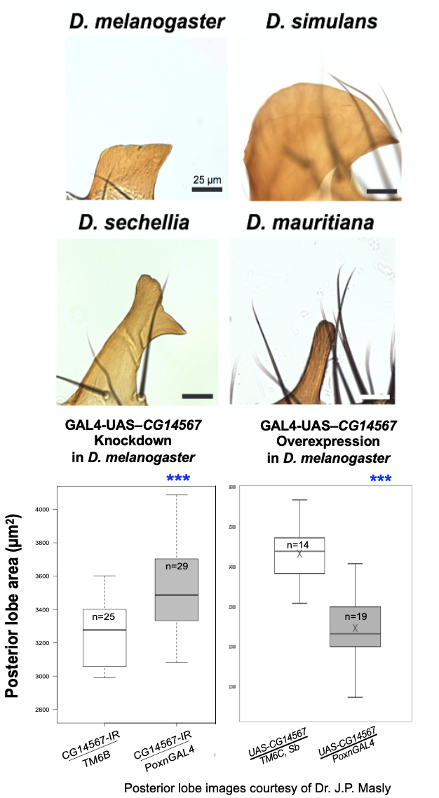

Sexual dimorphism represents one of the most significant dimensions of intraspecific variation in sexually reproducing organisms, creating much of the variation upon which evolutionary processes can act. Furthermore, organisms are mosaics of traits that vary in the degree to which they exhibit dimorphism. Therefore, sex-biased development has the potential to constrain or facilitate the diversification of novel traits and functions. While the ecological significance and fitness relevance of sex-dependent development is often well characterized, the underlying gene regulatory mechanisms are not. The striking diversity of sexually dimorphic traits in horned beetles offers the opportunity to characterize the interplay of gene regulatory mechanisms along two critical axes of diversification: the divergence of sex-biased development across different body regions, and macro-evolutionary divergence in sex-biased development across species. I am capitalizing on this diversity of traits to assess how development generates sexually dimorphic phenotypes, and how these processes are employed to adjust trait development as a function of sex, trait type, and species.

Research
Evolution and development of sexual dimorphism across horned beetle traits and species
Hox cluster structure and function in onthophagine beetles
Insects in general and beetles in particular display a striking diversity of head morphologies. More than shifts in relative sizes and shapes, insects have integrated numerous novel morphological features into head formation, yet how such innovation and integration has been enabled during developmental evolution remains largely unclear. Growing evidence points to the recruitment of modular developmental genetic components into new ontogenetic contexts as a mechanism enabling integration of novel traits into ancestral contexts, even the re-functionalization of embryonic patterning genes in post-embryonic developmental processes. I am investigating the potential roles of anterior Hox genes in patterning the post-metamorphic dorsal heads of horned beetles.
Beetle Sex Determination Pathway
Past work has demonstrated the role of the canonical insect sex determination factor, doublesex, in instructing the formation of diverse secondary sexual characteristics (sex combs in Drosophila, exaggerated mandibles in the stag beetle Cyclommatus, a range of dimorphic horn phenotypes in Onthophagus beetles, and even wing scale patterning in the butterfly Zerene cesonia). However, the factors that act upstream of and in concert with doublesex activity during the communication of sexual identity across the body varies widely across insect taxa and has been largely understudied in non-model systems. I am leveraging the diverse set of sexually dimorphic traits in Onthophagine beetles to uncover whether additional players in the scarab sex determination pathway are required for proper development in either or both sexes.
Agency in living systems
Objects respond to outside influences as determined by a preconfigured parameter space, following rules they cannot change. In contrast, agents shape their own development and the environment that surrounds them, and thus actively modify the configuration space within which they themselves grow (like an embryo), respond to perturbations (like a bagworm caterpillar adjusting its case), and ultimately evolve (like humans). While agency perspectives are common across other fields in the behavioral sciences, psychology, and allied fields, the utility of this framework must be assessed by its ability to fill in explanatory gaps left by existing theories, or open up questions previously unexplored by a field, or both. I am exploring the diversity and utility of agency perspectives for advancing current frontiers in evolutionary developmental biology.
Other Work
Genetics of a newly-evolved reproductive structure in Drosophila
During my undergraduate work with Dr. J.P. Masly, I became interested in how genetic variation shaped by evolutionary pressures may give rise to morphological diversity that, in turn, shapes species' subsequent responses to selection. I began studying the posterior lobe (PL), a morphological novelty in fruit flies that develops from the genital arch of males. The PL is present only in four species but has diverged dramatically in size and shape among them. Building off previous work showing that females mate preferentially based on species-specific male lobe morphology, I worked to uncover the genetic basis of PL development. I helped identify a novel gene that influences the development of PL size and shape by performing the functional genetics experiments to assess the gene's tissue-specific effects on PL development. The lab also discovered that this gene also may affect female sensory preference of lobe morphology – suggesting a potential genetic link between male trait and female preference that could drive reproductive isolation in these flies.
Priority effects among replanted native and invasive species along drought gradients

In the past I worked with the Oklahoma Biological Survey on a project led by Dr. Lara Souza focused on linking specific genotypes of native Oklahoman prairie grasses to success against invasion by exotic species along drought gradients.